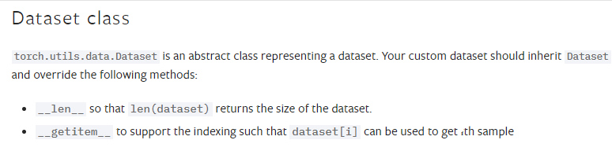

This blogpost will provide an introduction to Pytorch Datasets, Dataloaders. The examples used to illustrate their usageare related to the field of Natural Language Processing (NLP). Datasets and Dataloaders use Object Oriented Programmingtechniques. So, knowledge on OOP techniques (Classes, Methods and Inheritance) and basic NLP tasks(Language Modeling,Machine Translation) is essential to proceed further. We will first try to understand what problem we are tryingto solve and solve it ourselves using pure Python. This will help us later in understanding how Pytorch solves this problem for us.This article is divided into 4 parts.
In this part, we will handle data for a Language Modelling task. For language modelling, we need a corpus and vocab.Corpus is a one huge string formed by joining several sentences together. Now, this string has to be tokenized and here we use a simple split method of string for tokenization. Then we map tokens to ids using a vocabulary.Here vocab.stoi is a dictionary whose keys are words and values are ids.Lets have a look at corpus and vocab
corpus[:100]
'My dear brothers and sisters , I am speaking to you tonight to explain the reasons for some imp'
view_dict(vocab.stoi,5) #Displays 5 key value pairs of a dict
<unk> 0
the 1
. 2
of 3
and 4
So, to create a dataset we need to do the following steps
#Step 1
def encode_corpus(corpus,vocab):
corpus_list = corpus.split()##Tokenizing the text
corpus_id_form = [vocab.stoi[word] for word in corpus_list]#Encoding tokens to ids
return corpus_id_form
corpus_encoded = encode_corpus(corpus,vocab)
corpus_encoded[:10]
[717, 1837, 2343, 4, 1896, 5, 12, 49, 3096, 6]
For cross validation, we need separate train and validation splits. So a function to do the same
#Step 2
def create_splits_id_form(corpus_list, split_ratio = 0.9):
split_point = round(len(corpus_list)*split_ratio)
train_data = corpus_list[:split_point]
val_data = corpus_list[split_point:]
return train_data,val_data
trn_data, val_data = create_splits_id_form(corpus_encoded, split_ratio = 0.9)
len(trn_data), len(val_data)
(1490813, 165646)
So, targets are same as inputs just offset by 1 word
#Step 3
def create_dataset(data,seq_len = 10):
input_data = data[:-1]
target_data = data[1:]#targets are offset by one word
input_examples = [input_data[i:i+seq_len] for i in range(0,len(input_data),seq_len)]
target_examples = [target_data[i:i+seq_len] for i in range(0,len(input_data),seq_len)]
#Optionally deleting last sequence to ensure all sequences ore of same length
if len(input_examples[-1]) != seq_len:
del input_examples[-1]
del target_examples[-1]
return (input_examples,target_examples)
trn_set = create_dataset(trn_data)
val_set = create_dataset(val_data)
x_trn,y_trn = trn_set
x_val,y_val = val_set
x_trn[0],y_trn[0]
([717, 1837, 2343, 4, 1896, 5, 12, 49, 3096, 6],
[1837, 2343, 4, 1896, 5, 12, 49, 3096, 6, 40])
Now with this dataset, we need to create batches which can be fed to the model. This involves following steps:
use_cuda = torch.cuda.is_available()
device = torch.device("cuda" if use_cuda else "cpu")
#Makes the tensors compatible with the device we are working on
def create_batch(dataset,i,batch_size = 4):
input_examples,output_examples = dataset
#Step 1
input_batch = input_examples[i*batch_size:(i+1)*batch_size]
output_batch = output_examples[i*batch_size:(i+1)*batch_size]
#Step 2
input_tensor = torch.tensor(input_batch).to(device)
output_tensor = torch.tensor(output_batch).to(device)
return input_tensor,output_tensor
inputs, targets = create_batch(trn_set, 0)
inputs,targets
(tensor([[ 717, 1837, 2343, 4, 1896, 5, 12, 49, 3096, 6],
[ 40, 0, 6, 0, 1, 1866, 13, 111, 78, 58],
[ 160, 996, 1, 109, 20, 726, 164, 2, 762, 155],
[1043, 14, 0, 115, 2, 337, 14, 8, 457, 6]]),
tensor([[1837, 2343, 4, 1896, 5, 12, 49, 3096, 6, 40],
[ 0, 6, 0, 1, 1866, 13, 111, 78, 58, 160],
[ 996, 1, 109, 20, 726, 164, 2, 762, 155, 1043],
[ 14, 0, 115, 2, 337, 14, 8, 457, 6, 415]]))
Once we are able to get batches, we can use them in following manner in the training loop.
for epoch in range(epochs):
iterations = len(train_input)//batch_size
for i in range(iterations):
batch = get_batch(trn_set,i)
inputs,targets = batch
scores = model(inputs)
loss = loss_fn(scores,targets)
.........................
...............
............
Repeating the above process for every experiment is tedious and diffcult too.Pytorch simplifies the above work using Datasets and Dataloaders.Lets first have a look at the following snippet from Pytorch official Dataset Tutorial.
So, our dataset must inherit the Pytorch Dataset class. If we observe the training loop, to calculate number of iterations dataset length is needed and __len__ method does this job. If we observe the create_batch function, then we need indexing to collect the example we are packing into a given batch. For example, to get 2nd batch when batch_size is 4, we need to collect the 4th example to 7th example(remember 0 indexing). So, our dataset must be able to provide ith example when needed and __getitem__ method does this job.The above two methods will only help in creating batches in later stages. So, the preprocessing must be done in the __init__ method itself
In the __init__ method, the following steps must be performed.
from torch.utils.data import Dataset
class LM_Dataset(Dataset):
def __init__(self, corpus,vocab,seq_len = 10):
# Step 1
self.corpus = corpus
self.vocab = vocab
self.seq_len = seq_len
# Step 2
self.corpus_list = corpus.split()
self.corpus_ids = [self.vocab.stoi[word] for word in self.corpus_list]
#Step 3
self.inputs = self.corpus_ids[:-1]
self.targets = self.corpus_ids[1:]
#Step 4
self.inputs = [self.inputs[i:i+self.seq_len] for i in range(0,len(self.inputs),self.seq_len)]
self.targets = [self.targets[i:i+self.seq_len] for i in range(0,len(self.targets),self.seq_len)]
def __len__(self):
dataset_length = len(self.inputs)
return dataset_length
def __getitem__(self, idx):
input_idx = torch.tensor(self.inputs[idx]).to(device)
output_idx = torch.tensor(self.targets[idx]).to(device)
return (input_idx,output_idx)
total_dataset = LM_Dataset(corpus,vocab,10)
total_dataset[5]#Gives 6th exmpale
(tensor([ 2, 109, 0, 6, 4468, 0, 19, 1, 265, 791]),
tensor([ 109, 0, 6, 4468, 0, 19, 1, 265, 791, 2]))
Keep in mind, we still need to create training set and validation set. For this we can use Subset tool of Pytorch. We just need to pass on the dataset and indexes corresponding to train and validation sets. So if our dataset has 100 examples, we want a validation set whose size is 1/5th of total dataset. Then training set consists of ids from 0 to 79 and validation set has ids from 80 to 99
from torch.utils.data import Subset
def create_train_val_datasets(dataset,split_ratio = 0.8):
data_size = len(dataset)
split_point = round(data_size*split_ratio)
data_ids = list(range(data_size))
train_ids = data_ids[:split_point]
val_ids = data_ids[split_point:]
train_set = Subset(dataset, train_ids)
val_set = Subset(dataset, val_ids)
return train_set,val_set
trn_set, val_set = create_train_val_datasets(total_dataset)
Now batching is handled by DataLoader which returns a generator object. For starters,We just need to pass dataset and batch size, although there are many more options to configure it to our need. We can have a look at a batch usinng next and iter functions
from torch.utils.data import Subset,Dataset,DataLoader
trn_loader = DataLoader(trn_set,batch_size = 5)
x,y = next(iter(trn_loader))
x.shape,y.shape
(torch.Size([5, 10]), torch.Size([5, 10]))
Now, our training loop changes to this form
for epoch in range(epochs):
for i, batch in enumerate(trn_loader):
inputs,targets = batch
scores = model(inputs)
loss = loss_fn(scores,targets
.........................
...............
............
In the above example, the corpus file used for language modelling task is comparatively small. But some tasks like document classification or document summarization involve several files with each file storing a document. In those cases, if we load the contents of all the files at once it becomes memory intensive. So, using Pytorch Datasets we can read the text of only those files which we need when we are creating batches.So, lets have a look at one such task - Document Classification.
df = pd.read_csv("data/Train.csv")
df.head()
Index File_Name Labels
0 file_2180.txt 8
1 file_693.txt 4
2 file_2469.txt 6
3 file_2542.txt 6
4 file_378.txt 16
For this task, the contents of each document are stored in a text file and all these text files are stored in a folder called "documents". The dataframe above gives us the filename of each document and corresponding label. So, we don't want to read all the files at once because it is too memory intensive. So, first we'll write a fucntion to read the text ans store it in string
from pathlib import Path
doc_folder = Path.cwd() / "data" / "documents"
def script_reader(file_name):
file_path = doc_folder / file_name
with open (file_path, "r") as myfile:
doc = myfile.read()
return doc
text = script_reader("file_2542.txt")
Now we are going to create a new dataset called DocDataset. Here __init__ method will be simple, because preprocessing is done on the text and the text is loaded only when it is required. So, preprocessing is shifted to __getitem__ method.In the __init__ method, we just initialize the vocab and the dataframe containing the info.In the __len__ method, we need to return length of dataset which is nothing but the length of the dataframe.In the __getitem__ method, for a given index(idx), we will perform the following steps
class DocDataset(Dataset):
def __init__(self, data_frame,vocab):
self.df = data_frame
self.vocab= vocab
def __len__(self):
return len(self.df)
def __getitem__(self, idx):
file_name = df.loc[idx].File_Name
label_idx = df.loc[idx].Labels
doc = script_reader(file_name)
words = doc.split()
ids = [self.vocab.stoi[word] for word in words]
ids = ids[:20]
input_idx = torch.tensor(ids).to(device)
return input_idx,label_idx
trn_set = DocDataset(df,vocab)
trn_set[0]
(tensor([ 0, 0, 0, 0, 29, 0, 0, 0, 0, 0,
0, 0, 0, 274,19, 1, 0, 29, 0, 0]),
8)
Now just pass the dataset and batch size to the dataLoader to create batches and the training loop is similar to the earlier case.
trn_loader = DataLoader(trn_set,batch_size = 5)
x,y = next(iter(trn_loader))
x.shape,y.shape
(torch.Size([5, 20]), torch.Size([5]))
In the above example, we have trimmed the all documents to 20 tokens. This is often not ideal because we are losing information. Especially in the case of translation, where we need all the words. So, if our sequences are of different lengths then we can't directly use DataLoader in the way we did till now. So, lets have a look at a Translation task where translate a sequence from source language to destination language. In this case, we are directly using sequences which are already tokenized and encoded. Lets have a look at few examples of source language.
src_ids[:5]
[[282, 1, 28, 18211, 5],
[224, 91, 20, 18124, 1],
[211, 2528, 16, 4870, 3861],
[1, 3815, 2190, 27, 6766, 1],
[225, 7471, 6798, 162, 1, 5]]
We can observe that while some sequences have length of 5 and some of length 6. So we need to pad the shorter sequences so that all of them have equal length. And this has to be done at the batch level and not at the dataset level. So, the code for dataset is more or less similar to language modelling case except we add start token and end token to every sequence
pad_token = 0
unk_token = 1
start_token = 2
end_token = 3
class TranslationDataset(Dataset):
def __init__(self, src_sents, tgt_sents):
self.src_sents= src_sents
self.tgt_sents = tgt_sents
def __len__(self):
return len(self.src_sents)
def __getitem__(self, idx):
src_sent = [start_token] + self.src_sents[idx] + [end_token]
tgt_sent = [start_token] + self.tgt_sents[idx] + [end_token]
input_idx = torch.tensor(src_sent).to(device)
target_idx = torch.tensor(tgt_sent).to(device)
return (input_idx, target_idx)
training_set = TranslationDataset(src_ids,tgt_ids)
If we can have a look at create_batch function of Part - 1, it has two steps, collecting the examples that go into a particular batch and then converting them into appropriate form. Now, DataLoader still performs the 1st step, but the 2nd step is delegated to a custom collate function.
Here output of a __getitem__ method is a tuple. So, a collate function recieves a list of tuples where list length is equal to batch_size. So, our collate function must perform the following steps.
from torch.nn.utils.rnn import pad_sequence
def pad_collate(batch):
# Step 1
src_sents,tgt_sents = zip(*batch)
# Step 2
src_lens = [len(sent) for sent in src_sents]
# Step 3
src_padded = pad_sequence(src_sents,batch_first = True, padding_value = 0).to(device)
tgt_padded = pad_sequence(tgt_sents,batch_first = True, padding_value = 0).to(device)
return src_padded, tgt_padded,src_lens
train_loader = DataLoader(dataset=training_set, batch_size=10, shuffle=False, collate_fn=pad_collate)
batch = next(iter(train_loader))
inputs,targets,input_lens = batch
inputs.shape,targets.shape
(torch.Size([10, 8]), torch.Size([10, 13]))
So, a combination of Datasets, Dataloaders and custom Collate functions can help us tackle wide variety of problems. For more information,please have a look at following.
Refereneces: